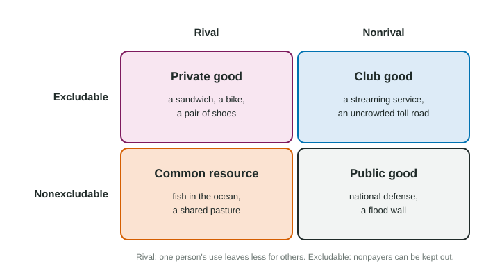

Three households share a dark street. A streetlight would cost $70 a year to run, and together they would happily pay more than that. Weeks go by and nobody pays, because whoever pays lights the street for the neighbors too, and the neighbors would get the light for nothing. Each household waits for someone else. This topic explains why markets handle pizza well and streetlights badly.
Two questions about any good
Economists sort goods with two questions.
- Is it rival? A good is rival when one person's use leaves less for others: a slice of pizza you eat is gone. It is nonrival when many people can use it at once without getting in each other's way: a radio broadcast, a fireworks show, a flood wall.
- Is it excludable? A good is excludable when people who do not pay can be kept from using it: a ticket gate, a login, a shop counter. It is nonexcludable when they cannot: you cannot stop people in a town from being protected by its flood wall.

| Kind | Rival? | Excludable? | Examples | What goes wrong in a market |
|---|---|---|---|---|
| Private good | yes | yes | a sandwich, a bike | usually nothing: the market can be efficient |
| Club good | no | yes | a streaming service, an uncrowded toll road | sellers can charge, but one more user costs almost nothing |
| Common resource | yes | no | fish in open waters, a shared pasture | overuse |
| Public good | no | no | national defense, a flood wall, a fireworks show | underprovision: free riders |
A public good is defined by those two features, not by who provides it. A school lunch served by a public school is a rival, excludable private good; a fireworks show paid for by a business group is still a public good.
Public goods and free riders
Because a public good is nonexcludable, people can enjoy it without paying. Each person's best move is to let others pay and use the good for free: the free-rider problem. A private firm cannot collect enough from users to cover its cost, so the market provides too little of the good, or none, even when it is clearly worth providing. That is a market failure.
Because a public good is nonrival, everyone uses the same unit at once. So its marginal social benefit is the sum of every user's benefit from that unit.
Worked example: is the streetlight worth it? On an invented street, the Abara, Bell and Cruz households would get yearly benefits of $40, $25 and $15 from one streetlight that costs $70 a year.
- Total benefit: all three use the same light, so add: dollars.
- Compare with cost: $80 is more than $70, so the light is socially efficient: society gains $10 a year.
- Will a market provide it? No household values it at $70 alone, and each would rather free ride on the others. Without some way to share the cost, the light is not built.
This is why governments provide many public goods (defense, flood control, street lighting) and pay for them with taxes, which everyone owes whether or not they would have paid voluntarily. Neighborhood groups and charities are other ways people solve the problem.
Common resources and overuse
A common resource is rival but nonexcludable. Fish in an open lake are the classic case: anyone may fish, and every fish one angler keeps is a fish no one else can catch. Each angler gets the whole benefit of his own catch but shares the cost of a smaller stock with everyone. So each fishes more than is best for the group, and the stock shrinks. This is the tragedy of the commons.
It is a negative externality (Topic 6.2): each user imposes a cost on others that he does not pay. The fixes work the same way, by making users face that cost: limits on how much each may take, permits, or a fee per unit used. Clear ownership can also help, since an owner has a reason to protect the stock.
Club goods
A club good is excludable but nonrival, like a members-only film library with plenty of capacity. Firms can sell it, because nonpayers are kept out. Many such goods are nonrival only until they get crowded: a toll road at rush hour becomes rival, because each extra car slows the others.